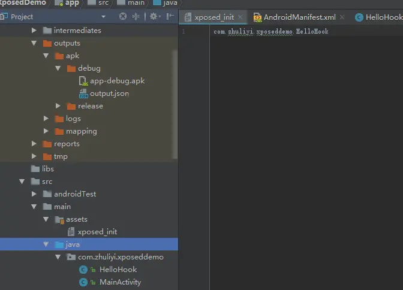

Xposed原理
Xposed的底层原理是通过替换/system/bin/app_precesss 程序控制zygote进程，使得它在系统启动的过程中会加载Xposed framework的一个jar文件即XposedBridge.jar，从而完成对Zygote进程及其创建的Dalvik虚拟机的劫持，并且能够允许开发者独立的替代任何class。
安装Xposed框架
可以选择使用太极阴或者VirtualXposed软件，来支持Xposed框架运行，相对比较省力，无需重启或者root。如果爱折腾，可以考虑使用太极阳或者EdXposed，获取更多权限。
注意VirtualXposed软件0.18.2版本之后不支持32位应用。
编写Hook应用
新建一个Android工程XposedDemo
引入Xposed Api
在app build.gradle文件中
添加de.robv.android.xposed:api:82和de.robv.android.xposed:api:82:source依赖
compileOnly 'de.robv.android.xposed:api:82'
compileOnly 'de.robv.android.xposed:api:82:sources'
在AndroidManifest.xml文件配置xposed信息
<!-- 标记xposed插件 start-->
<meta-data
android:name="xposedmodule"
android:value="true"/>
<!-- 模块描述 -->
<meta-data
android:name="xposeddescription"
android:value="测试Xposed"/>
<!-- 最低版本号 -->
<meta-data
android:name="xposedminversion"
android:value="54"/>
<!-- 标记xposed插件 end-->
创建hook类，实现IXposedHookLoadPackage接口
public class HelloHook implements IXposedHookLoadPackage {
@Override
public void handleLoadPackage(XC_LoadPackage.LoadPackageParam lpparam) throws Throwable {
XposedBridge.log("===包名===" + lpparam.packageName);
if (lpparam.packageName.equals("com.zhuliyi.xposedapplication")) {
//混淆后方法名也变化了
XposedHelpers.findAndHookMethod("com.zhuliyi.xposedapplication.MainActivity", lpparam.classLoader, "verifyLogin", String.class, String.class, new XC_MethodHook() {
@Override
protected void beforeHookedMethod(MethodHookParam param) throws Throwable {
super.beforeHookedMethod(param);
}
@Override
protected void afterHookedMethod(MethodHookParam param) throws Throwable {
super.afterHookedMethod(param);
param.setResult(true);
}
});
}
}
}
handleLoadPackage方法回调是在目标应用加载时候调用，先通过LoadPackageParam参与判断目标应用的包名，然后通过XposedHelpers.findAndHookMethod() hook调用的方法，第一个参数是包名，第二个是classLoader,第三个是方法名，后面是方法参数，最后是XC_MethodHook回调，beforeHookedMethod是方法执行前调用 ，afterHookedMethod是方法执行后调用，通过param.setResult(true)，设置返回值为true,当然也可以通过进行其他操作，这里就不介绍了
添加hook文件配置
我们需要在assets目录下面新建一个xposed_init文件，写上我们Hook文件的路径。

接着 编译，运行，安装apk，最后在Xposed软件模块中添加XposedDemo框架，然后重启设置。
太极官网
VirtualXposed GitHub首页
Xposed SDK下载
Xposed API